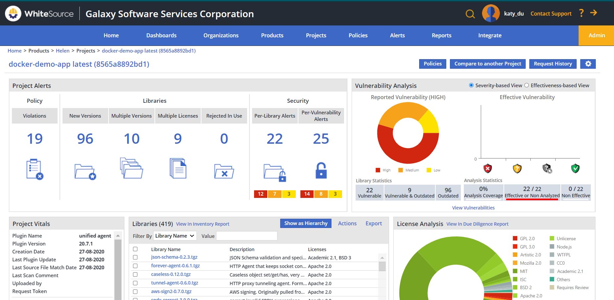
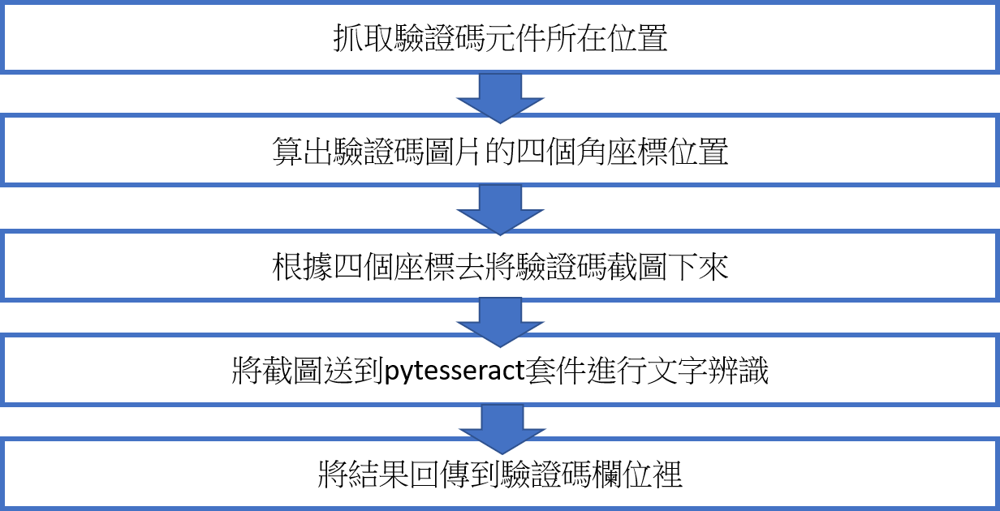
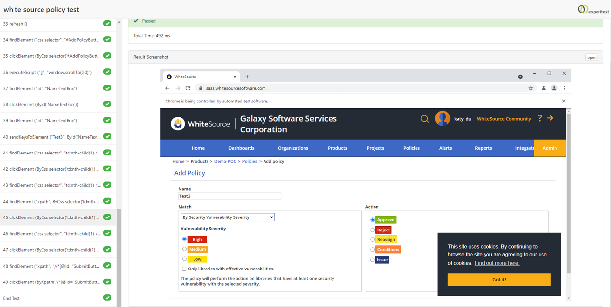
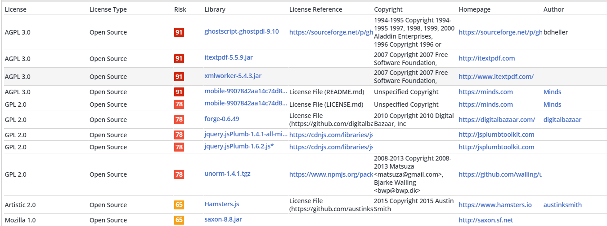
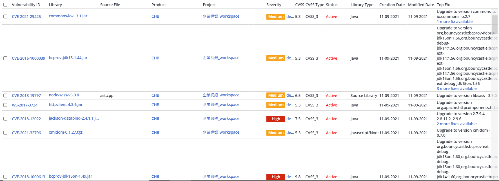

學習內容
Programming Languages & Tools Overview
Git版本控制
類似於Git這種版本控制的概念在資訊產業幾乎是無處不在，工作上很多地方都要用到，因此也算是必須要知道的知識，
像是在資安部門，各種文件都會需要更新到部門的Gitlab上，以方便進行版本上的控管，因此在新人訓的第一天就有
學習如何用Source Tree來實作Git，因為其提供好懂的GUI 界面來方便初學者踏入，那時學了最基本的commit、
pull、push、add這四大功能，還有commit的文字內容十分重要，要讓人易懂易讀，之後分發到資安部門後，
因為本身想要拋棄Source Tree往Git Command學習，正職也說Git是很實用的知識，因此給了我一本Git Command教學的電子書，
因此就開啟了學習Git Command打指令的路程，還有如何解決一些使用Git Command所發生的突發狀況，
除了學習打指令也偶然認識了GitBook這個雲端筆記，十分好用，很多新學到的程式語言我都會用這個雲端筆記來做整理。
WhiteSource整合工具
WhiteSource有跟許多平台進行整合，像是Jenkins、Azure DevOps、GitLab、Jira、Docker…等等，
因此需要了解許多平台跟WhiteSource整合的用法，像是以目前有學過的是Docker的images跟container
進行Unified Agent的掃描，再了解如何掃描前，必須先了解Docker環境，像是知道Docker三元素:
映像檔(Image)、容器(Container)和倉庫(Repository)，他的指令各是什麼意思，再自己手動去創建
一個image跟container去跑跑看，這些前置作業都確定沒問題之後，就可以開始了解Docker的 Unified Agent
掃描步驟，這部分我是請教正職一步一步教導我，透過正職的教導，發現主要都是再修改config檔內的參數來達到想要之結果
，因為有整合的關係，所以掃描過後產出的open source弱點報告會整合進去WhiteSource裡，
變成一個project如下圖，就可以去看掃描的結果，其他整合工具也是像Docker一樣的學習步驟。

自動化測試
網站測試是使用selenium IDE來錄製好網頁後，匯出程式碼到本地端來進行修改，這次匯出python語言
於pycharm上，修改這邊費了很多功夫，因為從selenium匯出的程式碼不一定是完全正確的，
因此跟正職在這邊討論了一段時間，並且有把遇到的問題整理起來並放上知識庫，在本地端確定執行沒有問題後，
就可以從SeeTest平台上，將雲端測試所需要
用到的程式碼複製下來，將錄製的程式碼放到相對應的位置後，在本地端執行程式碼，就可以送到SeeTest
進行雲端測試，並產出測試報告，點進去各個測試報告會有詳細的每個測試步驟跟參數，這就是一個完整的網站測試循環。
在八月中時，有一件專案是要幫一家廠商測試他的網站功能，這條功能包含了登入，而登入很常會搭配驗證碼，
驗證碼的存在對自動化測試來說是一個很難解的題目，因為無法抓取到驗證碼內的文字,因為它是一張圖片，
但是幸虧現在文字辨識跟圖片處理已經十分發達，因此python都有相對應的套件可以去處理，麻煩的是在環境建置上面跟圖片處理，
驗證碼處理的構思流程如下圖。


翻譯技巧
在checkmarx team，主管時時提醒翻譯是要人性化的翻譯，而不是一個字一個字照翻，這算是大家都知道的道理，
但是實際做起來卻不簡單，在翻譯checkmarx更新文件時，內容有漏洞的生成原因、導致什麼結果、建議修復等等，
很多內容都是專有名詞甚至是要真正了解這漏洞是如何運作才能寫出人性化的翻譯，因此需要查大量的資料去了解漏洞原因，
也修修改改了一陣子，七項漏洞需要整整兩天甚至三天才能翻譯完，很花時間但也很扎實。
ppt更新
在製作教育訓練手冊簡報時，其實不像是一般在學校做報告ppt一樣，公司會要求ppt換頁時標題位置大小要一樣，
要求整體整齊一致，尤其是在圖片上面較為嚴格，截圖下來的圖片大小跟圖片文字不能忽大忽小，
頁跟頁之間的圖片大小不能差異過大，這樣觀看ppt的觀眾在看時會比較舒服，
因此我花了很多時間在上下切換ppt頁數來看圖片文字跟位置是否正確，這次經驗讓我知道ppt除了排版跟顏色調配之外，
考慮到觀看者的角度也是很重要的一點。
授權分析
顧客的專案經過WhiteSource掃描會產出授權報告如下圖，授權之所以重要是因為現今越來越多專案使用到Open Source，
而每個Open Source的授權又不太一樣，很容易導致自己違反了Open Source的授權條款卻不自知。
之前有參與一些跟授權有關的教育訓練課程，
或是正職會給我之前的授權課程ppt，網路上也有許多授權相關的介紹，透過這樣一點一點的認識，讓自己對授權更有概念，
但了解授權內容跟如果解決授權條款是兩回事，但仍然是有跡可循的，各個授權都有各自的判定標準，
所以幾乎只要根據那個標準去判斷就可以給出相關的建議給客戶。

弱點分析
顧客的專案經過WhiteSource掃描會產出弱點報告如下圖，專案使用到的Open Source可能會有弱點，
進而容易導致惡意程式的執行或是敏感資訊洩漏等等危機，因此我們會點進去各個CVE弱點去看他的成因跟解決方法，
消化內容後再將成因跟解決方法提供給客戶做參考。

非技術面所學
-
詢問正職問題的技巧
-
設好適當的停損點
-
分析問題的能力
-
和同事之間的相處